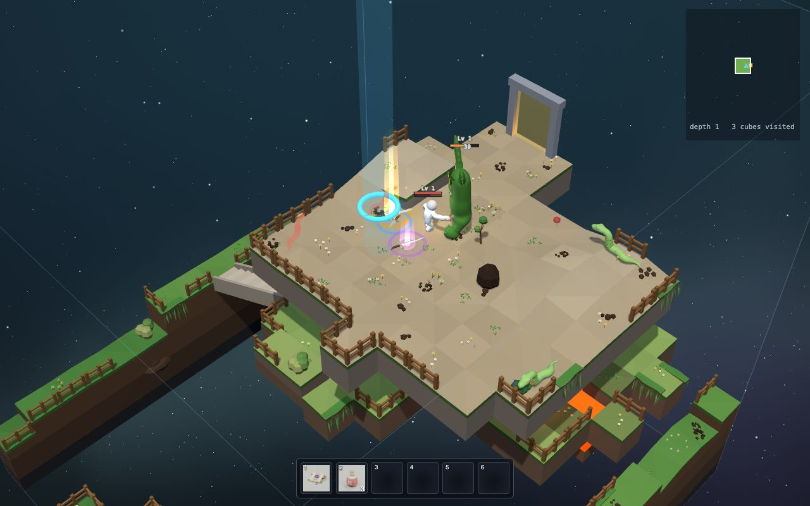

A sword fight, step by step
You click on a Stunder. Your hero walks up and swings. Thwack! Sparks fly, a number pops up, the Stunder staggers.
That took less than half a second. But the game had to answer four questions:
- When does the blade move, and when can it hurt?
- Did it hit? Was the monster close enough, in front, at the right height?
- How much does it hurt, and what does the monster do?
- How does it feel? Sparks, sounds, a tiny freeze.

Try it: the anatomy of a swing
A swing has three parts. First the wind-up: the arm pulls back. Then a short moment when the blade can hit. Then the recovery: the arm comes back. Swing a few times, then try a different sword.
Chaining, cancelling, lunging
Chaining. You don't have to wait for the whole swing. From the pink line on, a new swing can start. That time is the sword's attack speed: 0.32 seconds for the short sword, 0.66 for the greatsword.
Remembering clicks. If you click a bit too early, the game keeps your click for 0.3 seconds and swings as soon as it can. That makes fast clicking feel smooth, not ignored.
Cancelling. From the green line on, walking away cuts the recovery short. Before that, your feet are planted: you have committed to the swing!
Lunging. If the monster is just a bit out of reach, your hero steps in towards it during the wind-up. You don't have to be pixel perfect.
Heavy and light. All swords use the same animation, just played faster or slower. The heavy ones hit harder, reach further and sweep wider, but plant you longer. The light ones are quick.
| SWORD | DAMAGE | SWING TIME | PER SECOND |
|---|---|---|---|
| Short | 23 | 0.32 s | 72 |
| Medium | 34 | 0.42 s | 81 |
| Long | 39 | 0.48 s | 81 |
| Broadsword | 46 | 0.54 s | 85 |
| Greatsword | 60 | 0.66 s | 91 |
Try it: did the blade hit?
There is no real sword hitting a real spider. There are just numbers. So the game asks three questions:
- Close enough? Is the distance smaller than the blade's reach plus the size of the monster's body?
- In front? Is the monster inside the arc the blade sweeps?
- Right height? The blade sweeps from your knees to your chest. A monster on a ledge above you, or below you, is safe.
Drag the monster around. Turn the hero. Put the monster on a ledge with the slider.
The game also checks that no wall is in between, and that each monster is hit at most once per swing.
How much does it hurt?
The Old Sword you start with does 30 damage. A level 1 spider has 32 health: two hits. A Stunder has 140: five hits.
- Critical hits: 5% of all hits (1 in 20) do 1.5 times the damage, shown as a bigger, golden number.
- Your level: every level makes your weapon 2% stronger.
- Better swords: rarer and deeper swords hit harder. Treasure
- Knockback: the monster gets pushed away from you a bit.
Stagger and poise
A hit staggers a monster: it stops its attack, is stunned for a moment, and cannot attack again for 0.45 seconds.
But if that was all, you could keep any monster stuck forever by hitting fast! So after a stagger, a monster is poised for a while: braced, like a boxer with the guard up. Light hits still hurt it, but don't stop it. It can hit back.
Spiders and snakes have no poise. A Stunder is poised for 1.5 seconds, guardians up to 2. A really big hit (a quarter of its health or more) staggers anyway.
Juice: why hits feel good
Game makers call the extras that make actions feel great juice. They change nothing about the rules, but everything about the feeling. Hit the blob with everything on. Then turn things off one by one. Which one do you miss most?
The hit pause is tiny: time slows to 3% for 0.055 seconds (0.09 on a kill). You can't really see it, but you can feel it. Turn it off and hits feel like hitting air.
Who do I hit? Picking a target
There are three ways to attack in Cube Crawler:
- Click a monster: the hero walks up to it (finding a way around walls) and swings. Hold the button to keep attacking.
- Hold Shift: auto-attack. Swings at the best monster within reach, and never at thin air.
- No weapon? No attacks at all. (You can drop all your swords!)
The "best" monster
For auto-attack, every monster in reach gets a score: its distance, but a monster behind you counts as twice as far away as one right in front. The lowest score wins.
The one under your mouse pointer always wins first. That's how the game guesses what you meant.
const score = d * (1.5 - 0.5 * ahead); // straight behind counts as twice as farahead is 1 straight in front, 0 to the side, -1 straight behind.
The real code: the hit test
export function inSwordArc(p, enemy) {
const s = p.sword, stats = s.stats || SWORD;
if (!s.active || s.t < stats.activeStart || s.t > stats.activeEnd
|| enemy.mode === 'dead' || s.hits.has(enemy)) return false;
const dx = enemy.x - p.x, dz = enemy.z - p.z, distance = Math.hypot(dx, dz);
if (distance > stats.range + enemy.profile.radius) return false;
if (distance > 0.01 && Math.cos(Math.atan2(dx, dz) - s.yaw) < Math.cos(stats.arc)) return false;
// A blade sweeps around knee-to-chest height, not through a floor below us.
const bottom = p.y + 0.08, top = p.y + 0.85;
return enemy.y + enemy.profile.bodyHeight > bottom && enemy.y < top;
}Line by line:
- Only during the hit window (
activeStarttoactiveEnd), not a dead monster, and not one this swing already hit (s.hits). Math.hypot: the distance, by Pythagoras.atan2gives the direction to the monster. Subtract the way we face (yaw): if the cosine of that angle is smaller than the cosine of the arc, it's outside.- Do the heights overlap? The monster's body goes from its feet (
enemy.y) up bybodyHeight.
The demo two slides back calls exactly this function.
The real code: damage, stagger, poise
export const HEAVY_HIT = 0.25;
export function damageEnemy(enemy, amount) {
if (enemy.mode === 'dead') return false;
enemy.hp = Math.max(0, enemy.hp - amount);
enemy.hurtT = 0.22;
enemy.staggered = !enemy.hp || !(enemy.poised > 0) || amount >= HEAVY_HIT * enemy.profile.hp;
if (!enemy.hp) {
enemy.mode = 'dead'; enemy.deadT = 0; enemy.path = null; enemy.speed = 0;
} else if (enemy.staggered) {
enemy.mode = 'chase'; enemy.stun = enemy.profile.hitStun; enemy.speed = 0;
enemy.cool = Math.max(enemy.cool, 0.45);
enemy.think = 0;
enemy.poised = enemy.profile.poise ?? 0;
}
return true;
}Math.max(0, ...) stops health from going below zero.
hurtT = 0.22: the monster flashes for 0.22 seconds (the drawing code looks at this).
The staggered line reads: staggered if it died, or it is not poised, or the hit was heavy (|| means "or", ! means "not").
A stagger stuns it (stun), delays its next attack (cool), makes it think again right away (think = 0) and starts its poise timer.
Notice: no sparks, no sounds in here. Just rules. Rules and pictures
Prompt quests: Swords & Fighting
Make critical hits happen 10% of the time instead of 5%, and make the critical damage number purple instead of golden.Two small changes in two places: the rule (src/core/gear/stats.js) and the look (src/game/juice.js).
When an enemy dies, make the camera nudge and the sparks a bit bigger than now, so kills feel more powerful. Don't change any damage numbers."Don't change X" is a useful fence: it keeps the agent from changing more than you want.
Add a spin attack on the R key... wait, R is respawn. Find a free key first, then add a spin attack: a slower swing that hits all around me (a full circle) for 70% damage. Reuse the swing timing in src/core/combat.js and add tests for it like the existing ones in tests/combat.test.js.Ask the agent to check for clashes (like a key already in use), and to add tests.
Explain how stagger and poise work in this game, and why they were added. Look at docs/combat.md and docs/balance.md.The grown-up docs explain the "why". Point the agent at them!